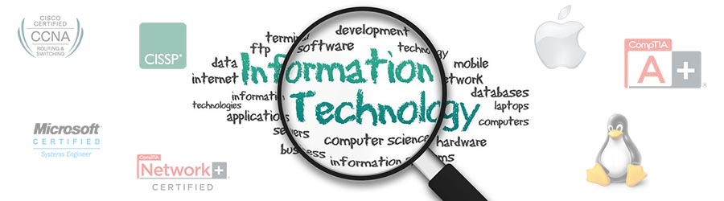

BIT in Nepal is one of best course in Nepal which directly deals with changing information technology. Over the years, it has been seen that BIT has been supplying the current need of IT industries. The bachelor in Information technology is an academic program comprising of core and advance IT unit. The core unit provides fundamentals of information technology that provides student the knowledge and skills in programming, system design, computer networks and communication. The advanced unit enables the students to exercise, develop and apply their knowledge and skills in many areas like multimedia, Artificial intelligence, mobile communication internet etc.
BIT in Nepal has ability to change the current structure of information technology in Nepal. On the completion of this course one can face the problems of development and growth of information technology. The description of BIT in Nepal is given below:
The candidate applying for this course should have successfully passed +2 in Science / Management / Humanities or equivalent degree with at least 45% in aggregate and 100 marks Mathematics paper.
BIT is introduced in Nepal to accept the globally changing information technology and to produce the IT professionals. The main objectives of BIT in Nepal are:
The grading system shall be as follows:
| Letter grade | CGPA | Division |
| A | 4.000 | First Division with Distinction |
| B+ | 3.333 to < 4.000 | First Division |
| B | 3.000 to < 3.333 | Second Division |
| B- | 2.667 to < 3.000 | Pass in Individual Paper |
| F | < 2.667 | Fail |
The syllabus of BIT in Nepal is as follows:
| BIT I Semester | |
| S.N. | Subject |
| 1 | Mathematics |
| 2 | Fundamentals of Info. System |
| 3 | Technical Communication |
| 4 | Basic Electrical System & Circuit |
| 5 | Principle of Management |
| 6 | Computer Programming |
| 7 | Project – I |
| BIT II Semester | |
| S.N. | Subject |
| 1 | Math II |
| 2 | Electronic Devices & Circuit |
| 3 | Digital Logic |
| 4 | OOP C++ |
| 5 | Project II |
| 6 | Financial Mgmt. Accounting |
| BIT III Semester | |
| S.N. | Subject |
| 1 | System Analysis and Design |
| 2 | User Interface Design |
| 3 | Data Structure and Algorithm |
| 4 | Microprocessor and Assembly Language |
| 5 | Numerical Methods |
| 6 | Project |
| BIT IV Semester | |
| S.N. | Subject |
| 1 | Communication System |
| 2 | Computer Organization |
| 3 | Web Technology-I |
| 4 | Database Management System |
| 5 | Discrete Mathematics |
| 6 | Marketing Management |
| 7 | Project – IV |
After the completion of BIT in Nepal, doors of many fields are opened for you. You can either work on private/ public institutions or you can open your own private IT Company. Some of the jobs titles you can get after this course are:
And Many more...

Ajal Tandukar
DC4
NP03A180031